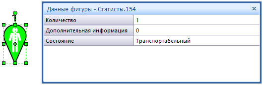
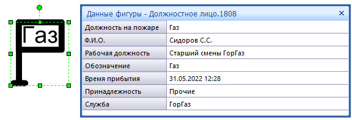
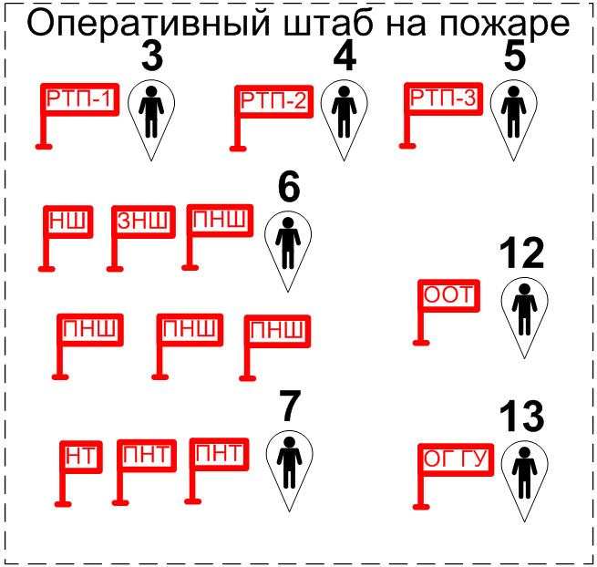
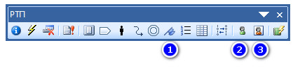
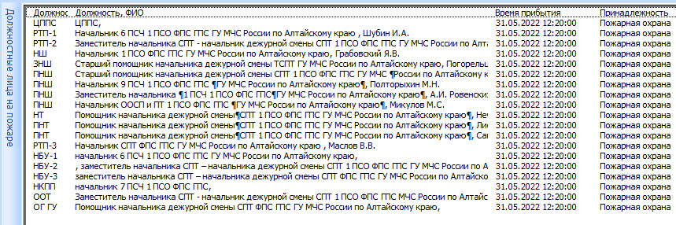
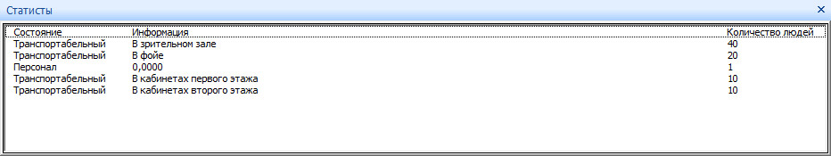
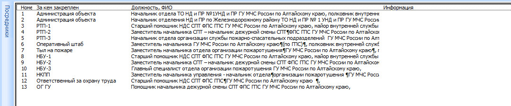

Обычно при составлении графической части методических разработок проведения учений используются те же способы составления схем расстановки сил и средств. Однако, применяя объектно-ориентированный подход, реализованный в АИГС ГраФиС-Тактик, мы можем по-новому взглянуть на особенности составления документации для ПТУ и ПТЗ.
Такие УГО как должностные лица, статисты и посредники в БУПО отсутствуют, да и не особо они нужны, если речь идет о прежних подходах к составлению, когда основная часть тактического замысла описывалась непосредственно в текстовых документах, а схемы были лишь пояснениями к ним. Философия же ГраФиС подразумевает, что схема является документом, полностью описывающим весь ход тушения пожара - в данном случае, условного. Все же текстовые представления информации формируются автоматически, в результате анализа модели.
Таким образом, появилась необходимость реализации в АИГС ГраФиС некоторых инструментов, которые позволили бы отражать в моделях расположение и действия статистов, задействованных в учениях, посредников за должностными лицами и собственно должностных лиц (РТП, НШ, НТ и пр.)
Фигуры
В версии АИГС ГраФиС-Тактик 13.0.02 был добавлен новый трафарет, специально предназначенный для хранения мастеров статистов и посредников. Мастера же “Должностное лицо” содержатся в трафарете “Управление СиС” и появились в версии 13.0.00.

Статисты
Фигура “Статисты” выглядит как балун и обладает свойствами, показанными на рисунке 2.

Цвет заливки фигуры меняется в зависимости от того какое значение указано в поле “Состояние”. Возможны следующие варианты:
- Транспортабельный - Зеленый
- Нетранспортабельный - Красный
- С ограниченными возможностями - Голубой
- Персонал - Черный (рис. 3)

Фигуры “Статисты” принадлежат слою “Статисты и посредники”.
Посредники
Фигура “Посредники” также выглядит как балун и обладает свойствами, показанными на рисунке 4.

При заполнении свойств фигуры пользователь может указывать ФИО и должность посредника, за кем из должностных лиц, техникой или элементами имитации закреплен посредник. Также по итогам учений непосредственно в модели могут быть записаны замечания, отмеченные посредником.
На рисунке 5 представлен пример составления модели обстановки на момент, предшествующий началу учений (Ч-05).

Фигуры “Посредники” также принадлежат слою “Статисты и посредники”.
Должностные лица
В отличие от фигур статистов и посредников, мастер фигуры “Должностное лицо” содержится в трафарете “Управление СиС”. Эти фигуры могут использоваться не только при составлении моделей учений, но и при составлении моделей реальных пожаров в прочих случаях.

Пользователь может указать должность на пожаре (РТП-1, РТП-2, НШ, НТ, ООТ и т.д.), ФИО должностного лица, его реальную должность, обозначение на УГО, время прибытия и принадлежность.

В случае, если должностное лицо не относится к пожарной охране, цвет УГО становится черным и появляется возможность указать принадлежность должностного лица к конкретной службе или организации.

На рисунке _ представлен пример состава оперативного штаба пожаротушения с посредниками.

Инструменты
На панель инструментов “РТП” добавлены инструменты “Должностные лица”, “Статисты” и “Посредники” (рис. 10).

Использование этих инструментов позволяет просмотреть следующие списки:


